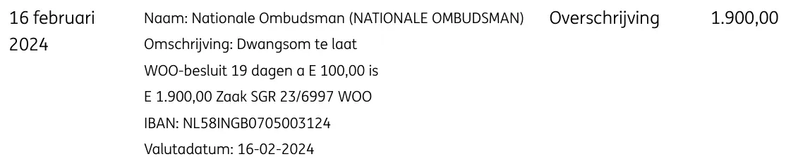

Prueba · Extracto bancario
Extracto bancario de ING, multa coercitiva pagada por el Defensor del Pueblo de los Países Bajos, 16 de febrero de 2024
El pasaje
«16 de febrero de 2024 · Nombre: Nationale Ombudsman (NATIONALE OMBUDSMAN) · Concepto: Multa coercitiva por decisión WOO tardía 19 días a 100,00 euros son 1900,00 euros Expediente SGR 23/6997 WOO · IBAN: NL58INGB0705003124 · Fecha valor: 16-02-2024 · Transferencia · 1900,00». La única línea de transacción de la página 1 del extracto, con los valores de las columnas «Datum» (fecha), «Omschrijving» (concepto), «Type» (tipo) y «Bedrag» (importe). Traducido del neerlandés; el texto original figura a continuación. Los puntos medios separan las columnas y los campos Nombre, Concepto, IBAN y Fecha valor; las líneas cortadas dentro de esos campos se han unido aquí.
Texto original
“16 februari 2024 · Naam: Nationale Ombudsman (NATIONALE OMBUDSMAN) · Omschrijving: Dwangsom te laat WOO-besluit 19 dagen a E 100,00 is E 1.900,00 Zaak SGR 23/6997 WOO · IBAN: NL58INGB0705003124 · Valutadatum: 16-02-2024 · Overschrijving · 1.900,00” El extracto escribe el símbolo del euro como una E mayúscula y sigue la convención neerlandesa del punto para los millares y la coma para los decimales, de modo que «E 1.900,00» equivale a 1900,00 euros. «WOO» es la Wet open overheid (Ley neerlandesa de Acceso Público a la Información).

Por qué importa este documento
En julio de 2023, el Tribunal de Distrito de La Haya había resuelto que el Defensor del Pueblo de los Países Bajos (Nationale ombudsman) no había admitido a trámite, de forma ilícita, una solicitud de información de Giltay. En diciembre de 2023, respecto de una solicitud posterior sobre la que la institución no había resuelto a tiempo, el tribunal impuso una multa coercitiva por cada nuevo día de retraso. Este extracto muestra el momento en que esa multa coercitiva se convirtió en dinero. El 16 de febrero de 2024, la institución transfirió 1900 euros a Giltay. Según el concepto que el Defensor del Pueblo puso en la transferencia, se trataba de una multa coercitiva por una decisión tardía en virtud de la Woo (Ley neerlandesa de Acceso Público a la Información), 19 días a 100 euros, en el expediente SGR 23/6997.
El ensayo sostiene que el cálculo en que se basaba este importe era erróneo y que el Defensor del Pueblo no corrigió ese error hasta junio de 2026, de modo que el pago complementario llegó veintiocho meses después de esta transferencia. Con las sumas concedidas por el juez, entre ellas los 1900 euros de este extracto, Giltay repuso la reserva con la que había pagado la traducción inglesa de su libro. Con ese dinero costeó también el viaje y la estancia en Tallin y los ejemplares impresos de la edición inglesa.
Procedencia
- Documento
- Extracto bancario, «Details af- en bijschrijving» (detalle de cargos y abonos), una línea de transacción
- Expedido por
- ING Bank
- Titular de la cuenta
- E.F. Giltay
- Ordenante
- Defensor del Pueblo de los Países Bajos, IBAN NL58INGB0705003124
- Importe
- 1900,00 euros, abonado como transferencia
- Fecha
- 16 de febrero de 2024, fecha valor 16 de febrero de 2024
- Número de expediente
- SGR 23/6997 WOO, tal como figura en la transferencia
- Referencias
- Resolución del Tribunal de Distrito de La Haya del 27 de diciembre de 2023 en el expediente SGR 23/6997 (ECLI:NL:RBDHA:2023:20409), que ordenó al Defensor del Pueblo de los Países Bajos resolver en un plazo de dos semanas e impuso una multa coercitiva de 100 euros por día de retraso, hasta un máximo de 15 000 euros. El extracto solo menciona el número de expediente, no el tribunal ni el identificador ECLI
- Pie de página
- «Aan de inhoud van dit document kunnen geen rechten worden ontleend» (del contenido de este documento no pueden derivarse derechos)
- Idioma
- Neerlandés
- Páginas
- 1
- Conservado por
- Archivo del autor
- Véase también
- Tribunal de Distrito de La Haya, resolución del 18 de julio de 2023 (ECLI:NL:RBDHA:2023:17841)Defensor del Pueblo de los Países Bajos a Giltay, 28 de febrero de 2024El pago complementario de la multa coercitiva efectuado por el Defensor del Pueblo de los Países Bajos, 26 de junio de 2026
Citado en:
- el ensayo «La prohibición cayó, el libro quedó en pie» en el capítulo (9) «Registrado para siempre» y en la diapositiva «Tribunal de Distrito de La Haya · 2023» de la presentación «La historia en el mapa»
- la sección de voces bajo el epígrafe «Nuevo avance».
Documento: https://
Modificado por última vez el 21 de noviembre de 2026, consultado el 27 de noviembre de 2026.

Esta página es una ficha de prueba del libro El general del encubrimiento de Edwin Giltay y del sitio web que lo acompaña.